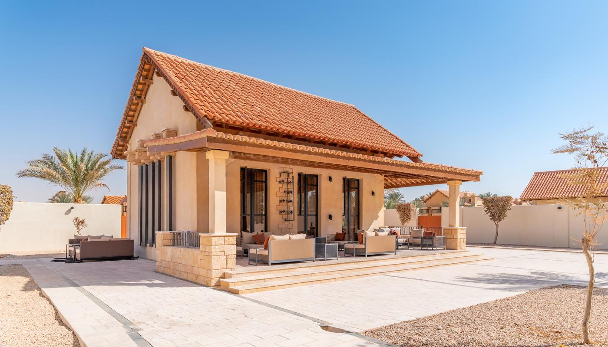

مقاول بناء مجلس خارجي قرميد | 0502833163
يمنح المجلس المستقل الضيوف مكانًا للجلوس، ويترك للأسرة خصوصيتها داخل المنزل، ويضيف سقف القرميد طابعًا يمكن تنسيقه مع واجهة الفيلا وحديقتها، لكن نجاح بناء مجلس خارجي قرميد يرتبط بتفاصيل تتجاوز اختيار اللون والشكل، مثل مساحة الجلسة وارتفاع السقف والعزل وموقع المدخل وتجهيز الكهرباء والتكييف.
وسنوضح في مقالنا اليوم كيف تختار مكان المجلس وتصميمه، وما الفروق بين خامات القرميد، وكيف تُجهز طبقات السقف والأرضيات والخدمات، وسنتناول عوامل التكلفة وتقييم المقاول، حتى تستطيع تحديد احتياجاتك ومناقشة عرض التنفيذ قبل بدء الأعمال.

بناء مجلس خارجي قرميد
يقصد بناء مجلس خارجي قرميد إنشاء مساحة للضيافة أو اجتماع الأسرة، واستخدام القرميد لتغطية سقفها وفق نظام مناسب، ويمكن أن يكون المجلس مغلقًا ومكيفًا أو مفتوحًا من بعض الجهات، ويؤثر الاختيار في الجدران والنوافذ والتشطيبات وطريقة الاستخدام.
ويبدأ مقاول بناء مجلس خارجي قرميد بالرياض بالسؤال عن عدد الضيوف المتوقع ونوع الجلسة والحاجة إلى حمام أو مغاسل، ثم تُراجع مساحة الموقع والخدمات المتاحة، ويُحدد نطاق البناء والتشطيب قبل تسعير المشروع.
وتحتاج أعمال تصميم وبناء مجالس خارجية قرميد إلى تنسيق الهيكل والسقف والواجهات، فالقرميد غطاء يحتاج إلى تدعيم وتثبيت وتفاصيل مناسبة، وتُراجع أوزانه ومتطلبات تركيبه ضمن التصميم، دون افتراض ملاءمة خامة واحدة لجميع المجالس.
ويُبحث بناء مجلس خارجي مع سقف قرميد عازل باعتباره نظامًا كاملًا يضم التغطية والعزل والتصريف وتفاصيل الوصلات، لأن الراحة داخل المجلس تعتمد أيضًا على الجدران والنوافذ والتكييف وجودة التنفيذ.
ملحق مجلس خارجي في الرياض
يسمح الملحق باستقبال الضيوف دون المرور بمناطق المعيشة الخاصة، ويمكن تجهيزه بمدخل مستقل وخدمات قريبة عندما تسمح الأرض والاشتراطات، ويُراعى ألا يعوق الوصول إلى مواقف السيارات أو الخزانات أو أجزاء المنزل التي تحتاج إلى صيانة.
ويُراجع أفضل مقاول بناء ملحق مجلس قرميد توزيع المجلس قبل اقتراح الواجهة، ويُحدد موقع الباب والأثاث والمغاسل ونقاط التكييف، كما تُدرس إمكانية ربط الكهرباء والمياه والصرف بالشبكات القائمة.
ويحتاج بناء مجلس خارجي قرميد إلى مراجعة متطلبات الترخيص حسب حالة العقار والإضافة المطلوبة، وتُبحث المخططات والإجراءات لدى المختصين قبل التنفيذ، خاصة عند تغيير مكونات مبنى قائم أو إضافة خدمات جديدة.
ويؤثر تجهيز الحمام والمغاسل في سعر بناء مجلس خارجي قرميد، لأنه يضيف تمديدات وعزلًا وتشطيبات وأجهزة صحية، ولذلك تُدرج تلك الأعمال في العرض، ويُحدد ما يشمله السعر بدل الاكتفاء بعبارة تشطيب كامل.
بناء مجلس في الحوش الرياض
تحتاج مساحة الحوش إلى توزيع يحافظ على حركة السكان والضيوف، ويُفضل تحديد مكان المجلس وفق المدخل والخصوصية والتعرض للشمس وإمكانية توصيل الخدمات، ثم يُراجع ما سيبقى من مساحة للجلسات والزراعة والمواقف.
ويستفيد مقاول بناء مجلس خارجي قرميد بالرياض من رفع المقاسات ومراجعة مناسيب الأرض قبل تثبيت التصميم، كما تُحدد مواقع الشبكات القائمة حتى لا تتضرر أثناء الحفر، وتُراجع متطلبات الأساسات وفق الأحمال وبيانات الموقع.
وتساعد مناقشة تصميم وبناء مجالس خارجية قرميد على اختيار شكل يناسب أبعاد الحوش، فالمجلس المستطيل يحتاج إلى توزيع يختلف عن المساحة المربعة، ويُراجع اتساع الجلسة بعد وضع الأثاث بدل الحكم عليها من المقاسات الخارجية وحدها.
ويُراعى عند بناء مجلس خارجي مع سقف قرميد عازل توجيه مياه الأمطار إلى تصريف مناسب، حتى لا تسقط عند الباب أو تتجمع بجوار الجدران، وتُحدد المزاريب ونقاط النزول ضمن تفاصيل السقف.
أفكار تصميم مجالس خارجية قرميد الرياض
يتيح بناء مجلس خارجي قرميد اختيار طابع تراثي أو عصري حسب واجهة العقار وذوق صاحبه، ويمكن استخدام ألوان متقاربة بين السقف والجدران والأرضية، ثم إضافة تفاصيل محدودة تمنح المجلس شخصيته دون ازدحام.
وتبدأ خدمات تصميم وبناء مجالس خارجية قرميد بتحديد الأجواء المطلوبة داخل الجلسة، فالمجلس العربي يناسبه توزيع جلوس محيطي، بينما يسمح الكنب المنفصل بتغيير الترتيب، ويُترك فراغ للحركة والوصول إلى الباب والخدمات.
وتمنح النوافذ الكبيرة إطلالة على الحديقة، لكنها تحتاج إلى مراجعة اتجاه الشمس والخصوصية وخصائص الزجاج، ويشرح أفضل مقاول بناء ملحق مجلس قرميد البدائل المناسبة بدل زيادة المساحات الزجاجية لمجرد جمالها في الصور.
ويُنسق السقف الداخلي والإنارة وفق ارتفاع المجلس، ويمكن توزيع الإضاءة العامة وإضاءة الجدران بحيث تخدم الجلسة، كما تُحدد نقاط التلفاز والمقابس قبل التشطيب، وتُستخدم تجهيزات تلائم مكان تركيبها وظروف تعرضها.
ويُفضل مراجعة قابلية التنظيف والصيانة أثناء تصميم وبناء مجالس خارجية قرميد، مثل الوصول إلى وحدات الإنارة ومعدات التكييف، واختيار تشطيبات تتحمل الاستخدام بدل عناصر يصعب الحفاظ على مظهرها.
أنواع قرميد مجالس خارجية بالرياض
يختلف القرميد في المادة والوزن والأبعاد والتثبيت وخصائص المنتج، ويحتاج مقاول بناء مجلس خارجي قرميد بالرياض إلى معرفة المواصفات الفنية قبل اختياره، لأن الاسم التجاري أو بلد المنشأ وحده لا يوضح ملاءمته للسقف.
وتشمل الخيارات قطعًا فخارية أو خرسانية، وألواحًا معدنية بتشكيل يشبه القرميد، ومنتجات أخرى تختلف خواصها حسب تركيبها، وتُراجع قدرة الهيكل على حمل النظام المختار ومتطلبات الحماية من التآكل أو التعرض للعوامل الخارجية.
ويتغير سعر بناء مجلس خارجي قرميد حسب خامة التغطية وملحقاتها ونوع التدعيم وكمية الهالك، كما تؤثر تعقيدات السقف وعدد الزوايا والالتقاءات في التوريد والتركيب، ولذلك تُقارن الأنظمة باعتبارها حزمة كاملة.
ويحتاج بناء مجلس خارجي مع سقف قرميد عازل إلى اختيار مادة العزل وسمكها وطبقات الحماية حسب التصميم، وتُراجع أيضًا متطلبات الرطوبة والتهوية وتفاصيل الفتحات، ويظل الالتزام بتعليمات المنتج جزءًا أساسيًا من التنفيذ.
ويُطلب عند بناء مجلس خارجي قرميد اعتماد عينة للمظهر وتوثيق مواصفات الخامة، حتى تعرف المادة المتفق عليها وطريقة التعامل مع أي بديل، ويُحدد الضمان الخاص بالمنتج والضمان المرتبط بأعمال التركيب.
معايير مهمة لتنفيذ مجلس قرميد خارجي بالرياض
تعتمد جودة بناء مجلس خارجي قرميد على سلامة الهيكل وتوافقه مع التغطية، ويُحدد نظام التدعيم وأبعاد عناصره وطريقة تثبيته بواسطة المختصين، كما تُراجع أحمال السقف والرياح والتفاصيل المرتبطة بالموقع.
ويتحقق أفضل مقاول بناء ملحق مجلس قرميد من اختيار ميل يناسب المنتج، وتُراجع تراكبات القطع والملحقات ومعالجة التقاء السقف بالجدران، ويختلف الحد المناسب للميل بين الأنواع، ولذلك لا يُعتمد رقم واحد لجميع الخامات.
ويُنسق مقاول بناء مجلس خارجي قرميد بالرياض مراحل التغطية والعزل والتمديدات، وتُجهز فتحات الخدمات وتفاصيلها قبل إغلاق السقف، كما تُراجع حماية الهيكل حسب خامته ومنع تجمع المياه في المواضع الحساسة.
ويُبحث بناء مجلس خارجي مع سقف قرميد عازل من خلال استمرارية العزل ومعالجة الفواصل والحواف، ثم تُجرى الفحوص المناسبة حسب نظام السقف، وتُوثق الملاحظات ويُحدد إصلاحها قبل استكمال التشطيبات التي قد تخفيها.
وتشمل مراجعة تصميم وبناء مجالس خارجية قرميد توزيع التكييف والتهوية والكهرباء، وتُحدد مواقع الوحدات وتصريف مياهها، كما تُراجع سهولة الوصول إلى التجهيزات عند الصيانة دون فك أجزاء كبيرة من السقف.
ويُطلب من أفضل مقاول بناء ملحق مجلس قرميد توضيح أسلوب المتابعة والإشراف وفحص الأعمال، لأن جودة المواد تحتاج إلى تنفيذ مناسب، وتفيد الصور المرحلية والمواصفات المكتوبة في مراجعة الأجزاء التي ستُغطى لاحقًا.
أرضيات مجالس قرميد بالرياض
تُختار الأرضية حسب طبيعة المجلس، فالمجلس المغلق يحتاج إلى خامة تناسب الجلسة والتنظيف، بينما تتطلب المساحات المفتوحة مراجعة التعرض للمياه والشمس وملاءمة السطح للحركة، وتُراجع خصائص المنتج الفعلية قبل الشراء.
ويتيح بناء مجلس خارجي قرميد تنسيق الأرضية والأثاث دون اشتراط استخدام خامة مرتفعة السعر، ويمكن مقارنة خيارات السيراميك والبورسلان والحجر حسب المواصفات والميزانية، ثم تُحدد طبقات التجهيز وطريقة التركيب والفواصل.
ويتأثر سعر بناء مجلس خارجي قرميد بمساحة الأرضيات ونوعها وأعمال تسوية السطح والوزرات والتفاصيل المحيطة، ويُفضل بيان تلك البنود حتى لا يبدو عرضان متساويين بينما يختلف نطاق كل منهما.
ويُراجع تجهيز أرضية الحمام والمغاسل بصورة مستقلة، وتُنسق المناسيب والعزل والتصريف قبل التبليط، كما يُراعى انتقال الحركة بين المجلس والحوش دون عوائق يمكن تجنبها أثناء التصميم.
مداخل مجالس خارجية الرياض
يحدد المدخل تجربة الوصول إلى المجلس، ويحتاج إلى عرض مناسب ومكان يسمح بفتح الباب دون اصطدام بالأثاث، ويمكن حمايته بتفاصيل سقف أو مظلة عندما يتطلب التصميم، مع مراجعة التصريف والإنارة.
ويُناقش مقاول بناء مجلس خارجي قرميد بالرياض موقع الباب بالنسبة لبوابة العقار والجلسات، وتُراجع الحاجة إلى حجب الرؤية عن الداخل، كما يُختار الباب حسب الأمان والاستخدام والتعرض الخارجي.
ويمنح بناء مجلس خارجي مع سقف قرميد عازل فرصة لتنسيق المدخل تحت جزء محمي من السقف، لكن بروزات التغطية تحتاج إلى تصميم وتثبيت مناسبين، وتُراجع علاقة المزاريب بالباب حتى لا تؤثر المياه في الدخول.
ويُحدد أفضل مقاول بناء ملحق مجلس قرميد تجهيزات المدخل ضمن نطاق العرض، مثل الإضاءة والدرجات والتشطيبات والأعمال المعدنية، ثم تُعتمد المواصفات قبل التوريد حتى يتكامل المدخل مع المجلس.
تكلفة بناء مجلس خارجي بالرياض
يبدأ تقدير سعر بناء مجلس خارجي قرميد من مساحة المشروع ونظام الجدران والسقف ونطاق التشطيب، ثم تُضاف الخدمات مثل الحمام والمغاسل والتكييف والأبواب والنوافذ، ويُراجع تجهيز الموقع وحالة التربة حسب الحاجة.
ويحتاج تحديد سعر بناء مجلس خارجي قرميد إلى معرفة ما يشمله عرض المقاول من مواد وأجور ونقل واختبارات ورفع مخلفات، كما تُوضح تكاليف التصميم والإشراف والإجراءات والضريبة وما يدخل منها في الاتفاق.
وتفيد مقارنة عروض بناء مجلس خارجي قرميد وفق مواصفات متشابهة في فهم الفروق، ويُطلب تحديد الخامات والكميات والأعمال المستثناة، ثم تُناقش البدائل الممكنة دون تقليل متطلبات السلامة والعزل.
ويُوثق أي تغيير في المقاسات أو التجهيزات قبل تنفيذه، ويُراجع تأثيره في التكلفة والموعد، كما تُربط الدفعات بمراحل يمكن التحقق منها، وتُحدد شروط الضمان والاستلام وطريقة معالجة الملاحظات.
مقاول بناء مجلس خارجي قرميد
تبدأ ضيافتك بمساحة تناسب احتياجك، ويمكنك عبر موقع شركة خدمات الترميم والهدم في الرياض مشاركة تفاصيل الموقع والأعمال التي ترغب في تنفيذها، سواء كنت تجهز مساحة جديدة أو تحتاج إلى تهيئة الموقع والتكسير ورفع المخلفات قبل الأعمال التالية، ثم تستفسر عن نطاق الخدمة المتاح وترتيب التفاصيل، حيث تضم الشركة عدد كبير من المقاولين المتخصصين في بناء مجلس خارجي قرميد.
ويساعد إرسال مقاسات الحوش وصوره وعدد الضيوف ونوع المجلس المطلوب على توضيح فكرة المشروع، كما يمكن ذكر رغبتك في حمام أو مغاسل أو نوافذ تطل على الحديقة، وطرح أسئلتك عن السقف والعزل والتشطيب قبل الاتفاق.
تواصل معنا على 0502833163، وأرسل موقع عقارك وصور المساحة التي اخترتها للمجلس، ووضح التجهيزات التي تحتاج إليها لنبحث تفاصيل طلبك والخطوة المناسبة لتجهيز الموقع.
الخاتمة
يمنحك بناء مجلس خارجي قرميد مكانًا تستقبل فيه ضيوفك عندما تُنسق المساحة والسقف والخدمات وفق احتياجاتك، ويساعد الاهتمام بالخامات والعزل والتصريف على تحسين الاستخدام وتقليل مشكلات الصيانة، كما يتيح الاتفاق المفصل معرفة ما ستستلمه ومتابعة الأعمال بندًا بندًا، لتكتمل الجلسة بمظهر تحبه وتجهيزات تستفيد منها.
الأسئلة الشائعة
ما الخامات المناسبة لإنشاء مجلس خارجي بسقف قرميد؟
يعتمد الاختيار على التصميم والأحمال والاستخدام، ويمكن استخدام أنظمة جدران وهياكل مختلفة، ثم اختيار قرميد وطبقات سقف متوافقة معها وفق المواصفات الفنية.
كيف أختار مساحة المجلس وموقعه داخل الحوش؟
حدّد عدد الضيوف ونوع الأثاث والخدمات المطلوبة، ثم راجع حركة الدخول والخصوصية والمساحة المتاحة والاشتراطات، واحسب فراغ الجلوس والحركة بعد توزيع الأثاث.
ما التجهيزات التي يحتاجها ملحق المجلس؟
يحتاج إلى إنارة ومقابس وتهوية أو تكييف حسب نوعه، ويمكن إضافة حمام ومغاسل، وتُحدد التجهيزات ضمن المخطط وعرض التنفيذ قبل البناء.
كيف تُنفذ أعمال المجلس الخارجي؟
تبدأ بمعاينة الموقع وإعداد التصميم والإجراءات المطلوبة، ثم تنفيذ الأساسات والهيكل والخدمات والسقف والعزل والتشطيب، وتنتهي بالفحص وإغلاق الملاحظات حسب الاتفاق.
ما فائدة تخصيص مجلس مستقل في الحوش؟
يوفر مكانًا للضيافة ويحافظ على خصوصية مناطق المعيشة، ويمكن تجهيزه بمدخل وخدمات تناسب استقبال الزوار دون تعطيل حركة الأسرة.
هل يغني القرميد عن العزل الحراري والمائي؟
يحتاج السقف إلى نظام متكامل، فالقرميد يغطي السطح، وتُحدد طبقات العزل والحماية والتصريف وتفاصيل الوصلات حسب التصميم والمنتج وظروف الموقع.
مقالات ذات صلة قد تفيدك
- مقاول ملاحق الرياض | بناء ملاحق الحوش والأسطح
- مقاول استراحات الرياض | بناء استراحات وشاليهات
- مقاول ملاحق اسمنت بورد بالرياض | التركيب والتكلفة
- خدمات ترميم المباني بالرياض
تحتاج معاينة أو عرض سعر لمشروعك؟
أرسل لنا مساحة المشروع وموقعه ونوع الأعمال المطلوبة، وسنساعدك على تحديد الخطوة التالية.
اطلب التواصل الآن